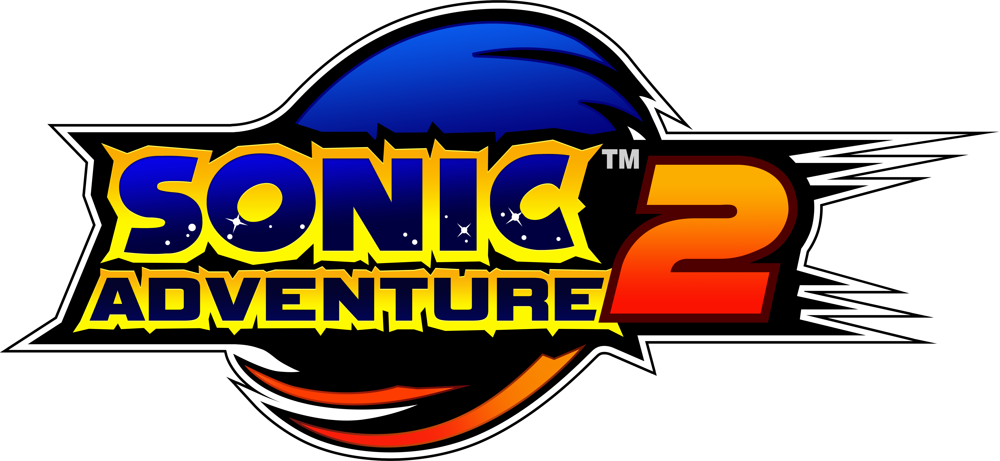

Com o relançamento do jogo para computadores, mods ficaram muito populares para o jogo, transformando a experiencia do jogo a algo melhor que a versão original de Dreamcast.
Mods adicionam diversas melhorias de vida ao jogo, principalmente na parte dos Chaos, que pode ser expandida de forma significativa
A primeira aventura 3D marcou uma nova era para a franquia, com um maior foco em história e estilo de gameplay diferentes para todos os seis personagens jogaveis.
O jogo original rodava no Dreamcast, o console mais poderoso da época e que usava varios recursos do DirectX para seus efeitos visuais.
O Gamecube, console que teve o primeiro porte de SA1 não possuia esses recursos, resultando na remoção desses efeitos e outros bugs introduzidos como resultado.
Todos os portes subsequentes tiveram a versão do Gamecube como base, resultando em todos eles tem uma iluminação pior e mais bugs que a versão original.
A melhor forma de jogar Sonic Adventure 2 no celular e emular a versão de Dreamcast com o emulador REDREAM